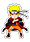

Personagens de Naruto
Naruto Uzumaki 
Naruto Uzumaki é um garoto que vive na Aldeia da Folha, a vila ninja no País do Fogo. Ainda bebê, Naruto teve aprisionado em seu corpo a Kyuubi (Raposa de Nove Caudas) pelo Yondaime Hokage (Quarto Hokage e seu pai), com finalidade de salvar a Aldeia.
Habilidades de naruto
Poderes e Habilidades: Super força,velocidade,agilidade,resistência,pode criar clones da sombra que podem usar seus jutsus,manipulação elemental do vento,regeneração,habilidade de invocar sapos para o ajudarem nos combates,usuário de energia natural que aumenta significantemente seus atributos,experiente no taijutsu,empatia(capacidade de sentir emoções),pode usar o chakra da Kyubi e assim atingir as transformações conhecidas como Modo Kyubi onde seus atributos aumentam ainda mais,habilidades de sensor,pode criar braços de chakra,capacidade de distribuir mantos de chakra para aliados aumentando seus atributos,capacidade de voo,pode restaurar órgãos perdidos,estabilizar a força vital,manipulação de Yin-Yang,manipulação de larva,manipulação de fogo,manipulação de água,manipulação de vapor,manipulação de tinta, com a gudou-dama pode destruir a níveis sub-atômicos, jutsus de selo.
Sasuke Uchiha
Sasuke é o filho mais novo de Fugaku e Mikoto Uchiha, além de ser o último sobrevivente do clã em Konoha quando a série começa. Após o trágico massacre de sua família quando ele era uma criança pequena, o garoto se tornou frio e distante, tendo como seu único objetivo vingança contra aquele que matou todo o seu clã,
Habilidades de Sasuke
Poderes e Habilidades Características Físicas Sobre-Humanas, Manipulação Elemental, Manipulação do Fogo, Manipulação da Gravidade, Manipulação da Alma, Manipulação de Eletricidade, Manipulação de Energia, Mestre em Taijutsu, Mestre em combate com espada, Mestre em Ninjutsu, Mestre em Genjutsu, Mestre em arco e flecha, Precognição, Criações de Ilusões, Teletransporte, Voo (com o Caminho Deva ou com Susano'o), Selamento (via Chibaku Tensei), Absorção de Energia, Imunidade a Toxinas, Invocação, Regeneração alta
Sarada Uchiha
Uma jovem ninja em treinamento, Sarada é a filha de Sasuke Uchiha e Sakura Haruno. Sarada nasceu enquanto sua mãe acompanhava seu pai em suas viagens. Ela é retratada como uma jovem determinada, amigável, inteligente e ambiciosa. Sarada tem uma personalidade forte e o desejo de se tornar Hokage, como o Naruto Uzumaki.
Habilidades de Sarada
Poderes e Habilidades: Super força, velocidade, agilidade, resistência, excelente no uso de armas brancas, pode prever movimentos e copiar jutsus com o Sharingan, através dele pode lançar e ver através de ilusões.